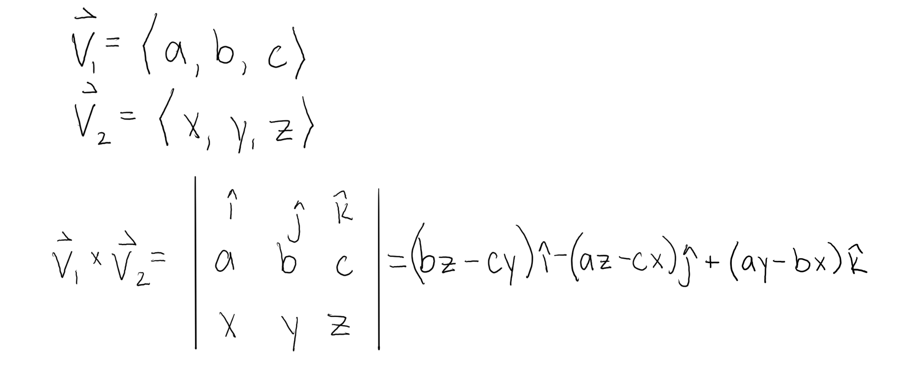

Solving 3D vectors
Solving 3D vectors can be a lot more complicated and there are a lot more you can do with them. Dot and cross product are some examples of this extension.
3D vectors, like 2D vectors, can be written with pointed brackets but this time with 3 elementc inside such as They can also be expressed using i, j, and k components. 3D vectors also have directional angles. These are angles from the vector to the positive x, y, and z axes, and can be used to find the direction they are going in. The squares of the cosines of these angles added together should always equal 1: Another way to represent 3D vectors is by angles theta, , measured counterclockwise from the positive x axis, and phi, , measured down from the positive z axis.
Theta can be up to 360 degrees, or 2 radians. Phi, however, is only measured up to 180 degrees, or radians.Solving 3D vectors can be a lot more complicated and there are a lot more you can do with them. Dot and cross product are some examples of this extension.
To find the dot product of two vectors and , multiply their like components and add together. The resultant of the dot product is a scalar. If the dot product between two vectors equals zero, the vectors are perpendicular or orthogonal to each other.
The dot product helps find a vector in the same direction as another vector. For example, you can dot a Force vector with a unit vector to find the amount of force acting in the direction of the unit vector. Another use for dot product is finding the angle between two vectors. This can be done using the equation: where a and b are both vectors.
Crossing two vectors gives a vector normal (or perpendicular) to both of them. It is typically used to find normal lines of planes. The right had rule is also used with cross product. If the cross product between two vectors is zero, the vectors are parallel to each other. Cross product is calculated using a matrix. See below:
An easier method to calculate cross product is by writing numbers vertically and performing multiplication in a pattern. See Below:
Find the dot product of the given vectors
A = 7i+2j+8k and B = 3i-2j+9k
(3, 6, 3) and (2, 8, 5)
V= 5j-2k and v= 10i+2j+5k
Find the angle between the given vectors. Round answers to 1 decimal place.
A = 7i+2j+8k and B = 3i-2j+9k
(3, 6, 3) and (2, 8, 5)
V= 5j-2k and v= 10i+2j+5k
Find the cross product of the given vectors
A = 7i+2j+8k and B = 3i-2j+9k
(3, 6, 3) and (2, 8, 5)
V= 5j-2k and v= 10i+2j+5k